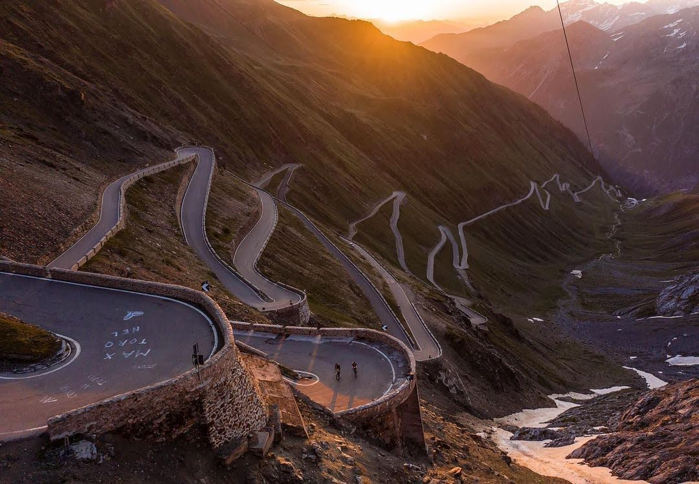
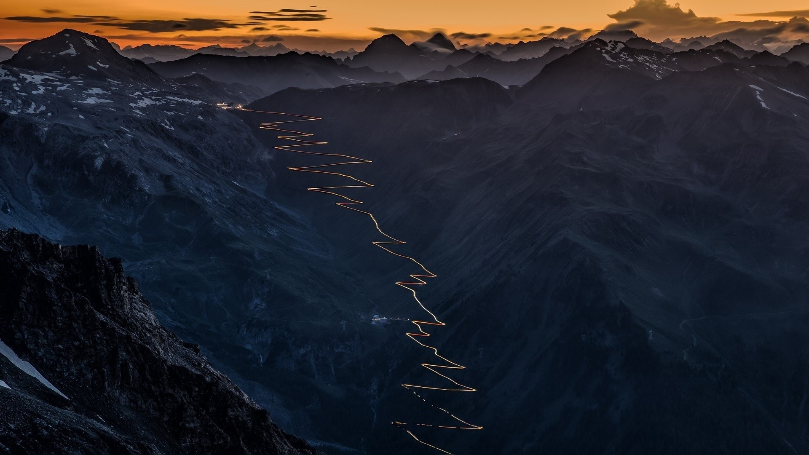
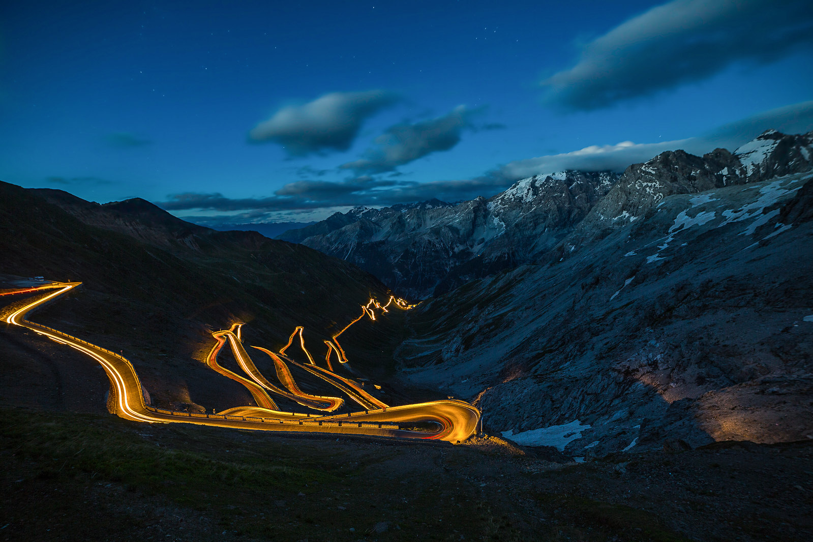

Stilfser Joch
Das Stilfser Joch, oder Passo dello Stelvio auf Italienisch, ist einer der berühmtesten und anspruchsvollsten Alpenpässe in Südtirol, Italien.

Mit einer Höhe von 2.758 Metern ist es der zweithöchste asphaltierte Pass in den Alpen. Die Straße, die über den Pass führt, ist für ihre 48 engen Kehren bekannt, die sich durch eine atemberaubende alpine Landschaft schlängeln.
Das Stilfser Joch ist ein beliebtes Ziel für Radfahrer, Motorradfahrer und Autofahrer gleichermaßen, die die Herausforderung und die spektakulären Ausblicke auf die umliegenden Gipfel genießen wollen.


Der Pass ist von Juni bis September geöffnet, je nach Wetterbedingungen, und bietet eine unvergessliche Fahrt durch eine der schönsten Bergregionen Europas.

Hinterlasse einen Kommentar